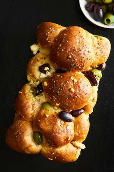

Olive Bread Recipe
A Mediterranean delight, this olive bread is perfect for pairing with soups or as an appetizer.
Ingredients
- 400g all-purpose flour
- 100g pitted black olives
- 1 packet dry yeast
- 1 teaspoon salt
- 300ml warm water
- 2 tablespoons olive oil
Instructions
- Mix warm water, yeast, and olive oil in a bowl. Let it rest for 5 minutes.
- Add flour, salt, and chopped olives. Knead until smooth.
- Let the dough rise for 1-2 hours, shape into a loaf, and bake for 25-30 minutes at 180°C (350°F).
